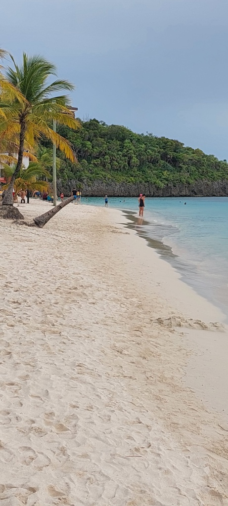
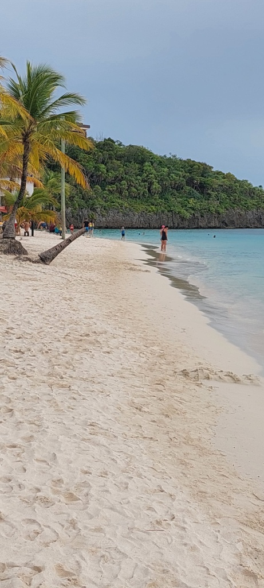
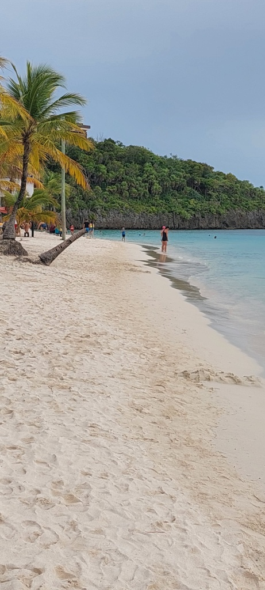
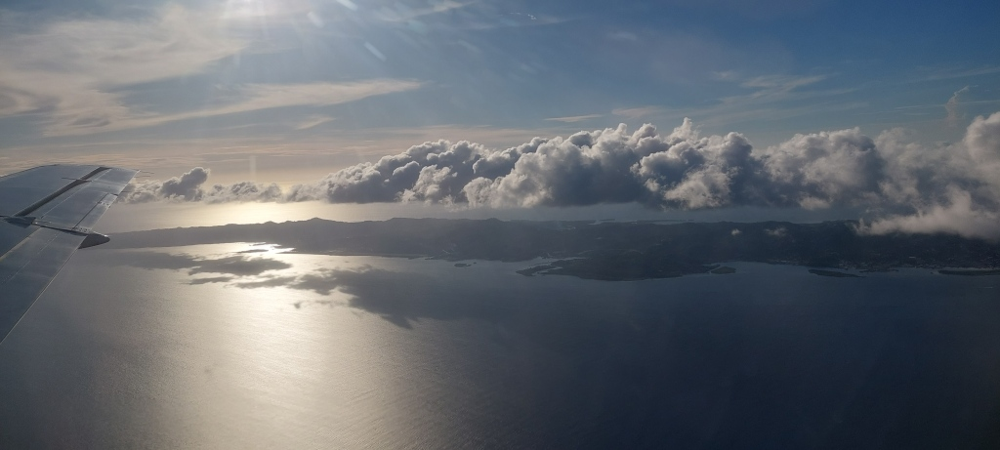
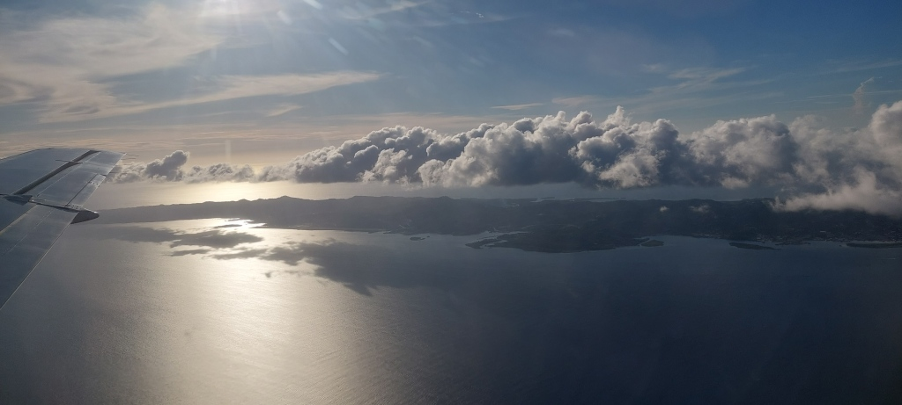

Роатан очень разнообразен. Море и пляжи невероятно красивы.

 

Роатан очень разнообразен. Море и пляжи невероятно красивы.

Национальный праздник Гондураса отмечается 15 сентября и является Днем независимости Гондураса.
15 сентября - важная дата для всех жителей Центральной Америки (Гватемала, Гондурас, Сальвадор, Коста-Рика и Никарагуа), за исключением Панамы, которые сегодня отмечают 202-ю годовщину независимости. Борьба за независимость в Центральной Америке длилась почти десять лет. Движение началось с первой попытки восстания в Сальвадоре 5 ноября 1811 года и осуществилось 15 сентября 1821 года, когда Гватемала, Гондурас, Сальвадор, Коста-Рика и Никарагуа подписали Акт независимости Центральной Америки.
Христофор Колумб открыл Центральную Америку и культуру майя в 1502 году. Уже через несколько лет испанцы превратили весь регион в свою колонию. Только в 1821 году, спустя более 300 лет, удалось добиться независимости от Испании. Однако в то время Гондурас еще не был отдельным государством: сначала он вместе с Никарагуа, Сальвадором, Гватемалой и Коста-Рикой образовал Объединенные провинции Центральной Америки. В 1840 году Гондурас стал независимой страной. О временах майя сегодня напоминает валюта: она называется лемпира и названа в честь вождя майя, который сопротивлялся испанским завоевателям.
Гондурас расположен в Центральной Америке, между Северной и Южной Америкой. Его соседями являются Гватемала и Сальвадор на западе, а также Никарагуа на юго-востоке. Свое название Гондурас получил от испанского слова hondura. Это означает глубину и указывает на глубокие воды в Карибском море у побережья Гондураса. Климат тропический. Это означает, что вместо времен года есть только сезоны дождей или засухи. Средняя температура составляет около 27 градусов.
С 1982 года Гондурас является представительной демократией с президентом во главе.
Приезжайте на Роатан и помогайте экзотическим животным. Наш проект по защите животных очень разнообразен.


Йоханна и Сабрина работали волонтерами на Роатане в пользу детей и взрослых с ограниченными возможностями. Йоханна и Сабрина - физиотерапевты и смогли применить свои знания на месте. Их социальная работа в пользу гондурасского населения была высоко оценена всеми. Мы из команды SWHO также благодарим вас за волонтерскую работу, которую вы выполнили на Роатане.
Внутренний рейс из Тегусигальпы до Роатана занимает примерно 1 час. Вот несколько впечатлений
 


Прибытие в международный аэропорт Роатана

Мы тепло приветствуем наших волонтеров Сабрину и Йоханну в нашем медицинском проекте физиотерапии на Роатане. В ближайшие недели они будут работать волонтерами в нашем медицинском проекте. Как дипломированные физиотерапевты, они будут помогать детям и взрослым с ограниченными возможностями. Волонтерская работа в Гондурасе очень ценится.
Хотя большая часть майя покинула Гондурас, здесь все же жили некоторые потомки этого народа, прежде чем страна была завоевана конкистадорами.
Термин конкистадор относится к испанским и португальским мореплавателям, которые в 16 веке претендовали на территории в Центральной и Южной Америке. Самым известным из них является Христофор Колумб.
В 1502 году Христофор Колумб впервые прибыл в Гондурас и высадился на карибском побережье. Отсюда и название страны, которую Колумб назвал в честь глубокого Карибского моря. Из Гондураса Колумб продолжил свой путь и претендовал на другие территории в Америке. В этом контексте также говорят об открытии Америки или завоевании Америки.